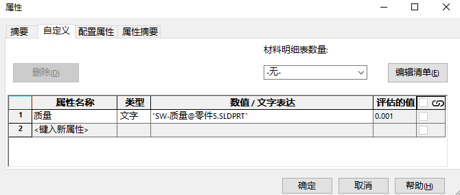
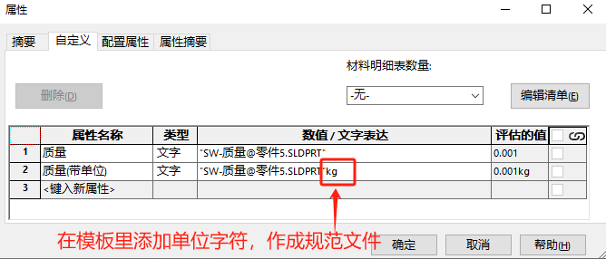
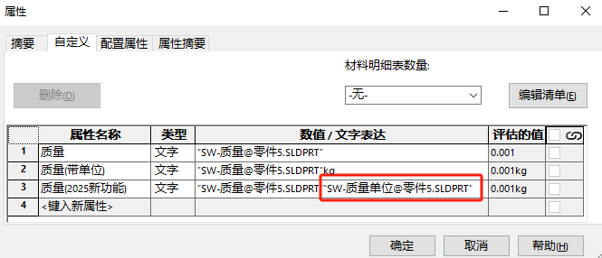

添加单位属性
我们用户在实际使用单位时候，有可能不会是统一标准（特别是针对国内外业务或不同行业产品时）
那么在这种情况下，我们使用不同单位的材料明细表时，容易产生数值换算的错误。
传统做法
通过”SW-质量@零件1.SLDPRT”的关键字，关联模型质量属性并显示。
优点：自动更新质量数值
缺点：只有数值，没显示单位。
高级做法
把单位写进模板内，这样在属性里也是能显示单位。
优点：自动更新质量数值+显示单位。
缺点：单位是固定的，如果切换模板文件可能就改变了（这可能需要我们有比较规范的操作流程）。
2025新功能
2025增加了单位属性的关键字，这样我们就能通过自动获取的方式（实时更新单位）。
优点：自动更新质量数值+自动显示单位。
缺点：应该暂无吧
